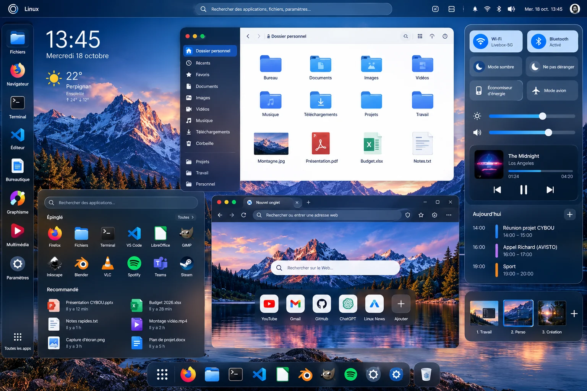

Native desktop · Remote Linux · SSH only
Your Linux.
A desktop of its own.
FORTIQ gives your Debian or Ubuntu server a real desktop on Windows and Android. Your files, tools and work stay on the server. The app only draws the interface and talks to it over SSH.
Engineering prototype · No public download yet

SSH is the only road
The client opens no connection except SSH to the server you choose. Nothing else leaves your device.
Nothing to install on the server
No agent, no daemon, no remote desktop. FORTIQ drives the Linux tools you already have, such as journalctl, notmuch and curl.
Every tool works without AI
Everyday apps stand on their own. An optional assistant is planned; it is not available today.
Applications
Everything you do on a server.
Now with a front door.
Each app is a graphical front end to a proven Linux tool, with clear errors when a source is unavailable.
- Supported
Files
Browse, preview, upload and download, rename, search, a server-side Trash and a built-in editor. Folders with tens of thousands of entries are shown page by page.
Limits Visual acceptance pending.
- Supported
Logs
Read journald and /var/log, filter by period and severity, follow live, group repeated events and inspect an incident, without AI.
Limits Correlation is a first slice; the full specification is still a target.
- Supported
Terminal
A real interactive shell over SSH with full terminal emulation, command history and Ctrl+C that works under heavy output.
Limits No tmux integration yet.
- Supported
MDok
A Markdown editor with preview, search and replace, and drafts kept on the server. If the file changed meanwhile, a conflict screen shows the difference.
Limits No PDF export yet.
- Supported
System
Services, processes, network interfaces and disks at a glance. Strictly read-only: no kill, no restart, no changes.
Limits Overview only, by design.
- Preview
Mail
Read and tag mail through notmuch on the server and send with msmtp. FORTIQ never talks to your mail provider directly.
Limits Needs notmuch, mbsync and msmtp set up on the server.
- Preview
Browser
A web reader that fetches pages with curl on the server and shows them as safe text. The sites see your server, not your device.
Limits No JavaScript, styles, forms or cookies.
- Preview
Databases
Query SQLite and PostgreSQL read-only, with row and time limits and cancellation.
Limits Read-only protection is a safeguard, not a security boundary.
“Supported” means part of the 1.0 contract, with an acceptance scenario and automated evidence. “Preview” means it works within the stated limits and is labelled as preliminary. Release qualification is still in progress.
How it works
A desktop here.
A Linux system there.
FORTIQ renders locally and works remotely. The server stays the source of your files and computation, so a slow connection never moves your data onto the device.
Add your server
Host, user, password or key. Profiles are saved on your device.
Verify it once
FORTIQ shows the host fingerprint and pins it before any credential is sent.
Work
Open Files, Terminal, Logs and the rest in one desktop. Sessions are reused, not reopened.
Honest status
Early, and clear about it.
FORTIQ is an engineering prototype. Here is what stands on evidence today and what still has to be proven before a release.
Verified so far
- Builds on Windows with MSVC and Qt 6.12.
- A live SSH suite of 57 tests passes against real Debian hosts, including two independent servers.
- Android arm64 debug build passed sign-in, Files and storage-picker checks in an emulator.
Still to prove
- Installation on a clean Windows machine, and a signed installer (no certificate yet).
- A physical Android device and a signed release APK.
- Visual acceptance of the desktop against the approved reference.
- Hosted CI results, and the pre-publication audit before the source is opened.
See where it stands.
Download status, requirements and what to expect from the first builds.
Download and install